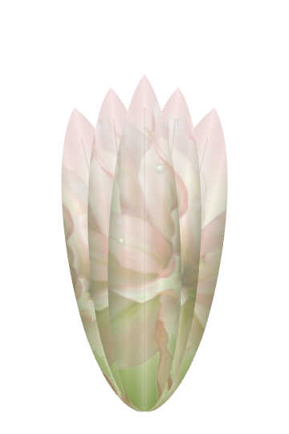
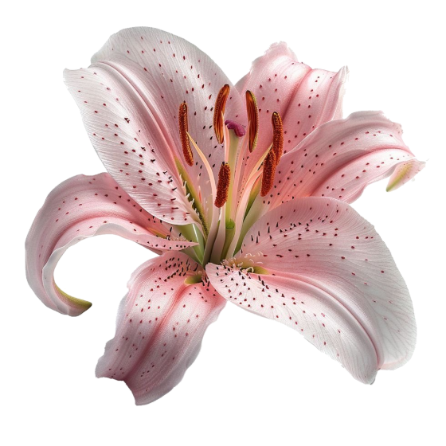
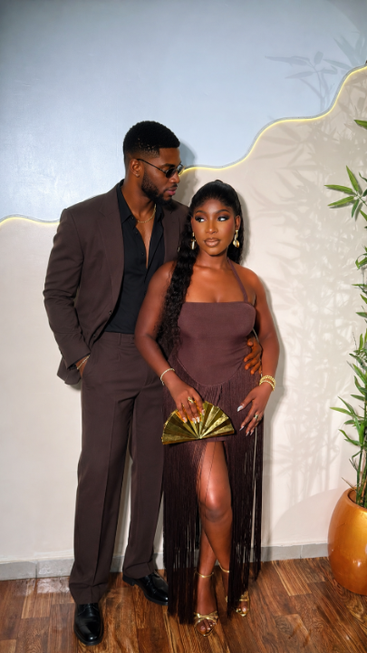

Even sweaty and out of breath, you were still the most beautiful thing in that room. I’d chase any goal in the world as long as you’re on the mat beside me.
Green faces, stuck-out tongues, zero glamour, and I laughed harder than I had all week. You make ordinary evenings feel like the best nights of my life.
You walked out in that dress and I forgot every word I’d planned to say. Every room turns golden when you’re in it. Thank you for letting me be the one on your arm.
Some people search their whole lives for the kind of love I get to wake up to. You are my calm on the loud days and my favourite reason to hurry home.
You make the small things sacred: morning coffee, late drives, the way you laugh at your own jokes before the punchline. With you, ordinary days bloom into something I never want to forget.
Thank you for being gentle with my heart and brave with your own. Wherever life takes us, I want to keep growing this garden with you, one day at a time.
“Thank you for making my life more beautiful every single day.”